1083 Matching Collections


MERRA-2 tavg1_2d_slv_Nx: 2d,1-Hourly,Time-Averaged,Single-Level,Assimilation,Single-Level Diagnostics 0.625 x 0.5 degree V5.12.4 (M2T1NXSLV) at GES DISC M2T1NXSLV VERSION 5.12.4

Bounding Rectangle: (90.0°, -180.0°, -90.0°, 180.0°)
DOI 10.5067/VJAFPLI1CSIV
- Related URLs:
- User's Guide | View All Related URLs
- Temporal Extent:
-
1980-01-01 ongoing
- GIBS Imagery Projection Availability:
- None
- Related Collections:
-
- Science Keywords:
-
- Earth Science
- Atmosphere
- Altitude
- Earth Science
- Atmosphere
- Atmospheric Pressure
- Earth Science
- Atmosphere
- Atmospheric Temperature
- Earth Science
- Atmosphere
- Atmospheric Water Vapor
The Modern-Era Retrospective analysis for Research and Applications version 2 (MERRA-2) is a NASA atmospheric reanalysis for the satellite era using the Goddard Earth Observing System Model, Version 5 (GEOS-5) with its Atmospheric Data Assimilation System (ADAS), version 5.12.4. The MERRA project focuses on historical climate analyses for a broad range of weather and climate time scales and places the NASA EOS suite of observations in a climate context.
MERRA-2 was initiated as an intermediate project between the aging MERRA data and the next generation of Earth system analysis envisioned for the future coupled reanalysis. Without a substantial investment to update MERRA's data assimilation routines, the system lacked the capability to analyze the latest observations. In addition, numerous advances to the GEOS5 system had been implemented since freezing the MERRA system in 2008. Therefore, a new full reanalysis integration was undertaken. MERRA-2 covers the period 1980-present, continuing as an ongoing climate analysis as resources allow.
Sign Up for the MERRA-2 Mailing List
Sign up for the MERRA-2 listserv to receive announcements on the latest data information, tools and services that become available, data announcements from GMAO and more! Contact the GES DISC User Services (gsfc-help-disc@lists.nasa.gov) to be added to the list.
MERRA-2 Science Data and Data Processing Questions
Do you have a question about MERRA/MERRA-2? Take a look at the File Specification Document (https://gmao.gsfc.nasa.gov/pubs/docs/Bosilovich785.pdf) and if that doesn't answer your question, users can contact staff with questions on the data, data processing and science. Send questions to merra-questions@lists.nasa.gov.
NASA/GSFC/SED/ESD/GCDC/GESDISC
ARCHIVERSearch by Shape File
Click here to select a shape file. You may also simply drag and drop shape files onto the map at any time.
Valid formats include:
- ESRI Shapefile (.zip including .shp, .dbf, and .shx file)
- Keyhole Markup Language (.kml or .kmz)
- GeoJSON (.json or .geojson)
- GeoRSS (.rss, .georss, or .xml)


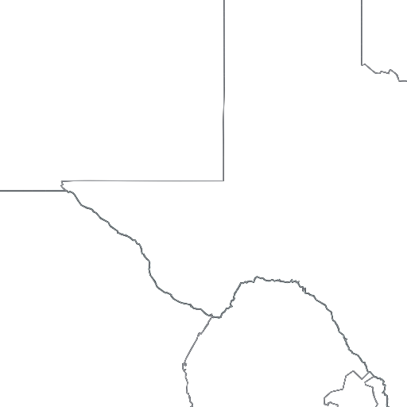
 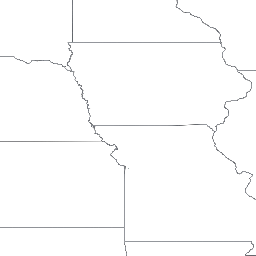
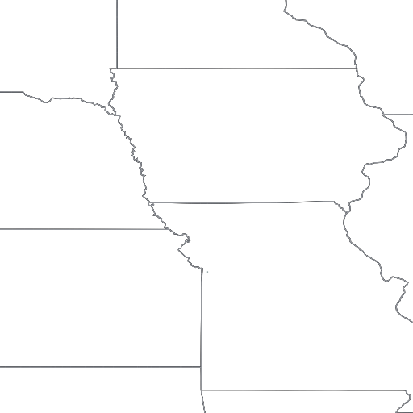


 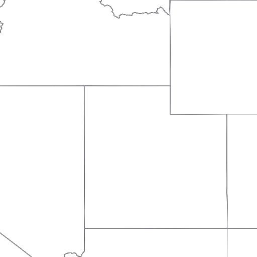
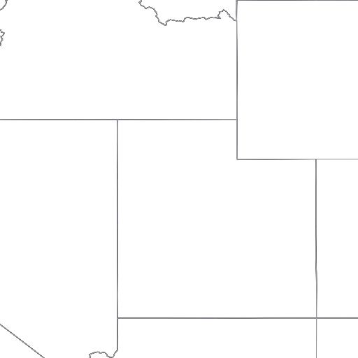


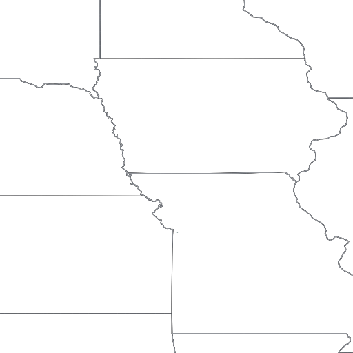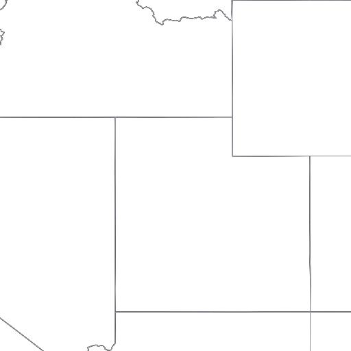 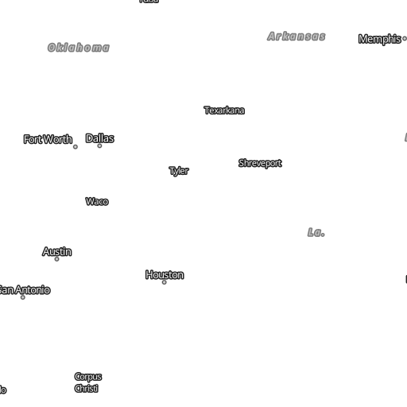
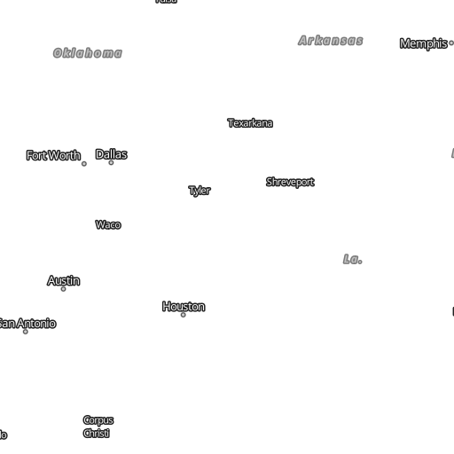


 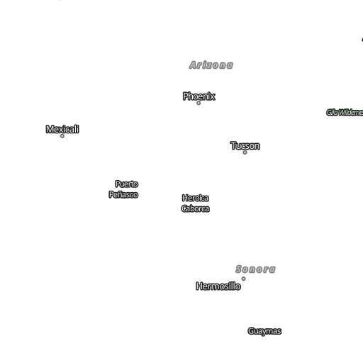
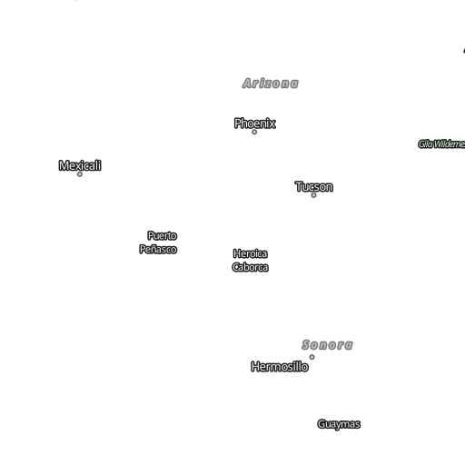